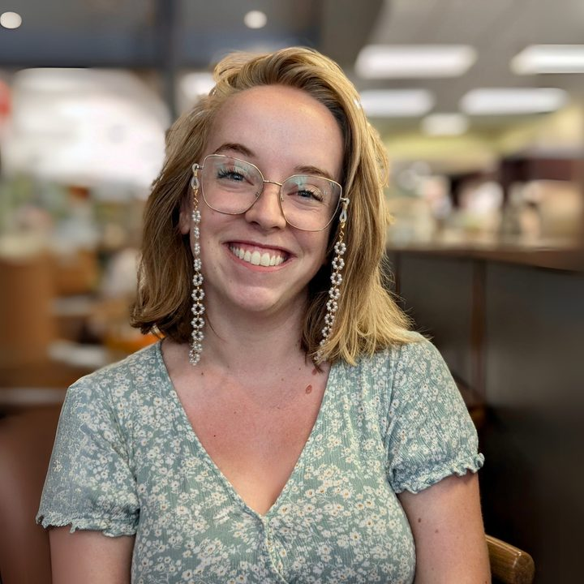

Marissa Chappell
M.S., CCC-SLP
Trilingual clinician-researcher brokering knowledge between multilingual deaf education and its communities.
Second-year Ph.D. student in Literacy Education, Department of Curriculum and Instruction, University of Connecticut. Advised by Dr. Hannah Dostal.
About
Marissa studies how deaf students become readers and writers, and how the systems around them help or get in the way. Her research looks at how knowledge of a signed language, including fingerspelling, supports English literacy, and at individual differences in sensitivity to English spelling patterns. Beyond the individual reader, she asks how the systems around deaf people shape their literacy lives across the lifespan, from the early intervention policies that define success in infancy, to the classrooms and research contexts that determine which language experiences are counted at all.
Community work
Marissa’s most meaningful work often happens outside the lab. She works alongside Spanish-speaking families raising deaf children and the trilingual interpreting community, recognizing that parents bring essential knowledge to their children’s literacy rather than being only recipients of it.
Manos Unidas/Hands United
Professional volunteer
Supports Spanish-speaking families raising deaf children, and leads workshops in Spanish on how families can support their deaf child’s reading and writing at home.
HELLO Lab
Community interpreter and cultural broker
At UConn’s Hearing Experience and Language Learning Outcomes (HELLO) Lab, helps Latine families take part in research about their own children’s language and hearing experiences.
Trilingual interpreting community
English, Spanish, and ASL
Maintains ties with trilingual interpreters and the broader community serving deaf families through social media channels, such as the Poliglotas network (created by Monica Gallego of Creando Lazos) and her own Instagram account, @comunicamanitos.
Interests and affiliation
- Interests
- Literacy
- Deafness
- AAC
- Multilingualism
- EEG
- Languages
- English, Spanish, and American Sign Language
- Advisor
- Dr. Hannah Dostal
- Affiliation
- Institute for the Brain and Cognitive Sciences (IBACS), University of Connecticut
Publications
-
2026
Literacy curricula and assessment tools reported in deaf education programsDOI forthcoming
- 2026
- 2026
- 2025
Clinical experience
Marissa received her M.S. in Speech-Language Pathology from the University of Tennessee Health Science Center, with a concentration in aural rehabilitation. There she was a funded scholar in an Office of Special Education Programs grant that trained speech-language pathologists and teachers of the deaf together.
As a certified speech-language pathologist (CCC-SLP), she provides assessment and services in English, Spanish, and ASL. She spent two years as an itinerant early intervention speech-language pathologist for deaf children in rural North Carolina, then two years as a speech-language pathologist at the American School for the Deaf in West Hartford, CT. She has also served Spanish-speaking families as an early intervention and early childhood SLP with Language First in Manchester, CT.
Before her graduate training, she earned a B.A. in Communication Sciences and Disorders from Western Washington University, with a minor in Religious and Cultural Studies.
- Certification
- Certificate of Clinical Competence in Speech-Language Pathology (CCC-SLP)
- Languages of service
- English, Spanish, and American Sign Language
- Specialties
- Early intervention, bilingual-bimodal (ASL and English) development, aural habilitation, literacy for deaf learners
Positions
- Spanish-speaking early intervention and early childhood SLPLanguage First, Manchester, CT2025–2026
- Speech-language pathologist for the deafAmerican School for the Deaf, West Hartford, CT2024–2026
- Itinerant speech-language pathologist, bilingual-bimodal and aural habilitation specialtyPediatric Speech and Language Services2022–2024
Professional service
- Continuing education module writer (volunteer)Registry of Interpreters for the Deaf. Modules on rendering print into ASL for young readers.
- Community outreach committee memberNSF TRANSCEND
Education
- M.S., Speech-Language PathologyAural habilitation concentration, University of Tennessee Health Science Center2022
- B.A., Communication Sciences and DisordersMinor in Religious and Cultural Studies, Western Washington University2020
Teaching
- EDCI 4010: Disciplinary Literacy for the Content Areas (Math, Science, Social Studies)Instructor of record, University of ConnecticutSpring 2026
- EDCI 4110: Teaching Reading and Writing in the Elementary GradesInstructor of record, University of ConnecticutFall 2025
- Foundations of Reading (CT 190) and Praxis 5355 asynchronous modulesCourse writer and designer, University of ConnecticutFall 2025
Research in progress
Marissa’s work uses mixed qualitative and quantitative methods to study the literacy lives of deaf learners. It spans three scales: the brain, the classroom, and the policies that decide which children are served and how. One question connects them: what conditions allow deaf learners to thrive as readers and writers, and who gets to define them?
-
The brain and the reader
EEG and behavioral methods that ask how signed language knowledge, including fingerspelling, supports English reading, and how sensitivity to written English varies across individuals. She also contributes to open-science infrastructure that makes deaf cognitive neuroscience more rigorous and accessible to the field.
- An EEG study investigating the neural processes through which fingerspelling connects signed language and English print in signing deaf readers.Pilot data collection in progress
- An eye-tracking study examining how ASL vocabulary knowledge shapes English reading comprehension and eye-movement control in deaf readers.Data collection in progress
- A psychometric development study introducing a continuous wordlikeness rating task to capture individual differences in sensitivity to English spelling patterns.Data collection in progress
- An open-science initiative building a standardized, open-access EEG dataset to serve as a shared benchmark for deaf cognitive neuroscience.Data collection in progress
- A computational corpus analysis examining how relationships between form and meaning are organized in spoken versus signed vocabularies.Data analysis in progress
-
The classroom
Discourse analysis within design-based research on Strategic and Interactive Writing Instruction (SIWI), alongside classroom-based observation and coaching. This includes supporting speech-language pathologists as they collaborate with teachers in classrooms, and codifying the knowledge of multilingual SLPs in practice-based settings. Throughout, she attends to whose expertise carries weight in these partnerships.
- A design-based research study testing and refining the Strategic and Interactive Writing Instruction (SIWI) framework for secondary classrooms serving deaf students.Manuscript in preparation
- A qualitative discourse analysis examining how teachers and researchers negotiate whose knowledge counts when they reflect on instruction together.Manuscript in preparation
-
Policy and systems
How early intervention policy and research reporting practices render deaf children’s language environments invisible, and what it would take to measure what matters to deaf children and their families.
- A critical qualitative document analysis examining how federal, state, and local early intervention policy impacts deaf infants and toddlers.Data analysis in progress
Talks
- A continuous wordlikeness rating task for indexing orthotactic sensitivity across individualsMechanisms Across the Language System: Learning and Prediction in Speech and ReadingFall 2026
- Epistemic downgrade and teacher positioning in a design-based research debrief: An analysis using critical discursive psychology16th Annual LangFESTSpring 2026
- Deafness, literacy, and the role of the speech-language pathologistInvited guest lecture, SLHS 6367: Clinical Connections SeminarFall 2025
- Lectoescritura: ¿Cómo apoyar a un niño sordo a leer y escribir?Literacy: How to support a deaf child to read and write. Manos Unidas/Hands United Spanish Parent Workshop Series. Video in Spanish.Summer 2025
- Integrating technology and curriculum to support DeafBlind learners and their familiesCHARGE Syndrome Foundation Biennial ConferenceSummer 2025
Fellowships, grants, and awards
- Shankweiler Fellow and Funded ScholarCognitive Neuroscience of Communication–Connecticut (CNC-CT)2027–2029
- T32 Individual Differences Research AwardCognitive Neuroscience of Communication–Connecticut (CNC-CT)2026
- TRANSdisciplinary Convergence in Educational Neuroscience (TRANSCEND)National Science Foundation2025
- Interdisciplinary Preparation of Speech-Language Pathologists and Educators of the Deaf and Hard of HearingU.S. Department of Education, Office of Special Education Programs (OSEP)2021
Beyond the lab
Marissa picked up Spanish and ASL the hard way. Ask her about the Spanish novels that almost ended her language career, or how she taught herself ASL.
Her ProTactile description:
Chunky rings, sweaty palms, short fingers, excited knee bumps!
Both her tactile identifier and her ASL name sign are based on her glasses chain, which changes regularly!